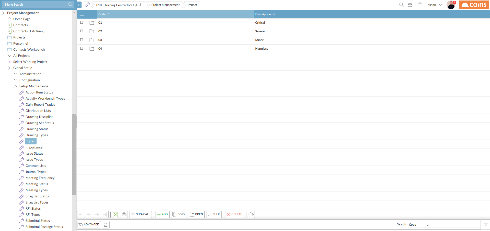
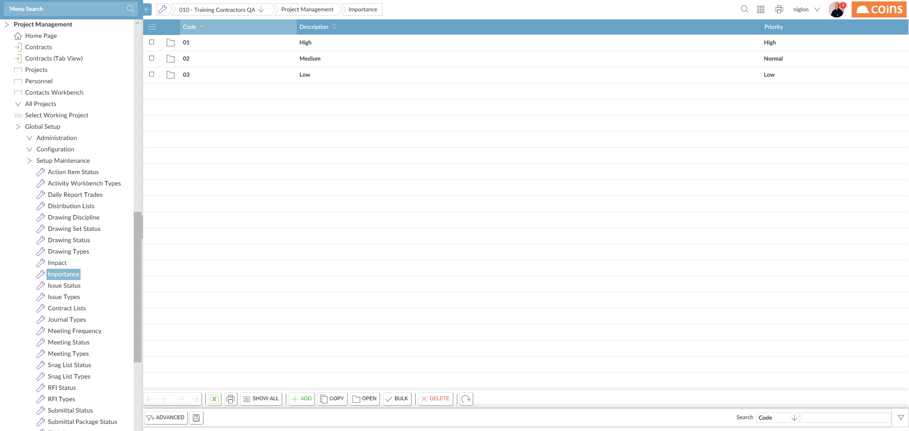

Several items in Project Management require you to select the impact and importance of the item. You need to set up values for impact and importance.
Go to:
Project Management > Global Setup > Setup Maintenance > Impact

|
Field |
Description |
|---|---|
| Code | A code to identify the impact level. |
| Description | A description of the level of impact, such as Low, Medium, High, etc. |
Go to:
Project Management > Global Setup > Setup Maintenance > Importance

Field | Description |
|---|---|
| Code | A code to identify the importance level. |
| Description | A description of the importance level, such as Low, Medium, High, Critical, etc. |
| Priority | If Project Management items are to be synchron |
Set the default Importance and Impact using the parameters DEFIMPORT and DEFIMPACT respectively.